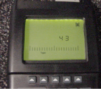

Illustration 5:
Wattmeter Display Set To Read Peak Power Sensor

NOTE:
This action displays the Sensor Type configured in the Wattmeter. This procedure uses Sensor” Type 43”, which is optimized for peak power measurement.